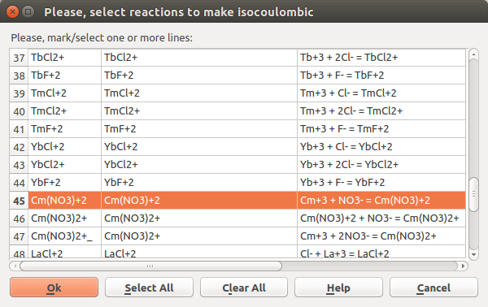
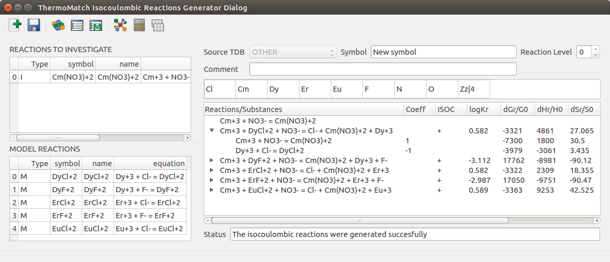
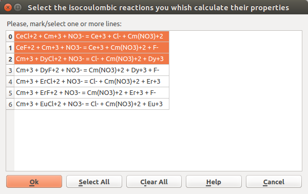
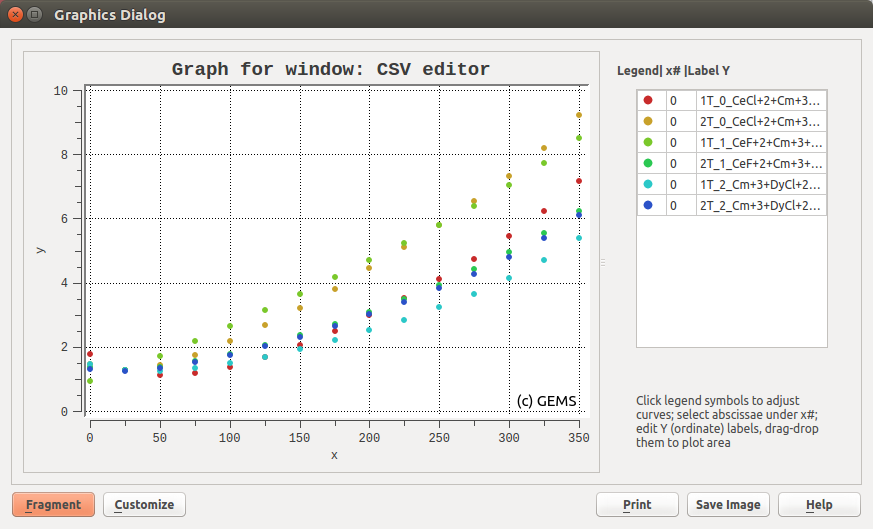
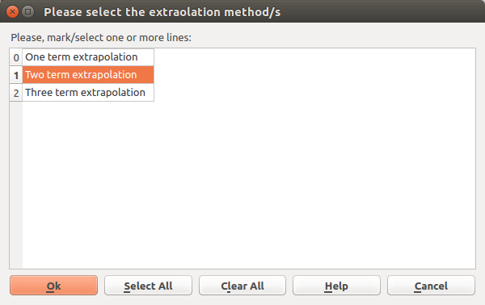
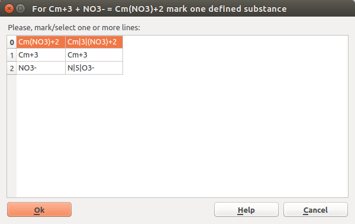

Empty Isocoulombic Reactions Generator Window
Given a list of selected non isocoulombic reactions and a list of selected model reactions, the isocoulombic reactions generator will generate all possible isocoulombic reactions, by combining the non isocoulombic reactions with the model reactions. The logK values for the non isocoulombic reactions can be then calculated by using the isocoulombic reactions using one-, two- or three-term extrapolation methods.
Empty Isocoulombic Reactions Generator Window
Note
Follow the messages written in the status bar for the work flow, success, and error messages.
1. To start using the Isocoulombic Reactions Generator Application first click the Select Database source and Elements  . Chose the desired source database (Step 1), in the next step the desired elements (Step 2), and in the last step if present the desired reaction sets (Step 3). This will filter the data available for generating reactions.
. Chose the desired source database (Step 1), in the next step the desired elements (Step 2), and in the last step if present the desired reaction sets (Step 3). This will filter the data available for generating reactions.
Note
The available elements are based on the available substances in the selected source database. If a substance contains an element, the element will be selectable.
 |
 |
 |
|---|---|---|
| Step 1 | Step 2 | Step 3 |
2. Select one or more non-isocoulombic reactions to be investigated, by clicking Select Investigated Reactions  .
.

Select Investigated reaction/s
3. Select the model reactions which will be used for generating isocoulombic reactions, by clicking Select Model Reaction  .
.

Select Model Reactions
4. Generate isocoulombic reactions, by clicking Generate Isocoulombic Reaction  . If the reactions were successfully generated, they will be displayed in the window, together with their properties at 25 C 1 bar.
. If the reactions were successfully generated, they will be displayed in the window, together with their properties at 25 C 1 bar.
You can now calculate the logK values for the investigated reactions (or the isocoulombic reactions) using the one-, two-, and three-term extrapolation methods. Or you can now save a selection from the generated isocoulombic reactions as reaction sets.

Successfully generated isocoulombic reactions
5. Calculated logK values for the investigated reactions at different temperature and pressure points, by clicking Calculate Properties of Invesitgated Reactions  . Step 1 , the user will be asked to define the temperature and pressure points at which the logK values will be calculated. Step 2, the user will be asked to select the isocoulombic reactions which will be used in the calculations. Step 3, the user will be asked to select one or more extrapolation method to be used when doing the calculations using the previously selected isocoulombic reactions.
. Step 1 , the user will be asked to define the temperature and pressure points at which the logK values will be calculated. Step 2, the user will be asked to select the isocoulombic reactions which will be used in the calculations. Step 3, the user will be asked to select one or more extrapolation method to be used when doing the calculations using the previously selected isocoulombic reactions.
Note
The selected extrapolation method/s if possible (depending on the thermodynamic data available) will be automatically set for all the selected isocoulombic reactions.Based on the selected isocoulombic reactions and the selected extrapolation methods in the results file a collumn with the name: \extrapolation type_\number of the investigated reaction_\reaction equation. For example: 1T_0_CeCl+2+Cm+3+NO3-=Ce+3+Cl-+Cam(NO3)+2, this means that the values in found in this column were calculated using the one-term extrapolation method and the isocoulombic reaction with the given equation (index 0, first investigated reaction in the investigated reactions list).
1T - one-term; 2T - two-term; 3T -three-term;
 |
 |  |
|---|---|---|
| Step 1 | Step 2 | Step 3 |
If calculation was successful, view and plot the result by clicking Show and Plot Results  .
.
Note
The result are written in a result_.csv file found in the application folder.

Plot of calculated logK values for an investigated reaction using several isocoulombic reactions and extrapolation methods.

Calculated logK values for an investigated reaction using several isocoulombic reactions and extrapolation methods as present in the results_.csv file. The column names are related to the extrapolation method type (1T, 2T, 3T), the index of the investigated reaction (0, 1, 2, …)
5b. Calculated logK values for the generated isocoulombic reactions at different temperature and pressure points, by clicking Tools/Calculate Properties of Generated Isocoulombic Reactions . If calculation was successful, view and plot the result by clicking Show and Plot Results .
6. Save the generated isocoulombic reactions, by clicking Save Reactions Set  . Step 1, the user is asked to select the isocoulombic reactions he wants to save. Step 2, the user must select one extrapolation method which will be set in the saved reactions record. Step 3, the user is asked to choose which substance participating in the investigated reaction/s is the reaction defined substance.
. Step 1, the user is asked to select the isocoulombic reactions he wants to save. Step 2, the user must select one extrapolation method which will be set in the saved reactions record. Step 3, the user is asked to choose which substance participating in the investigated reaction/s is the reaction defined substance.
Note
The substance selected as reaction defined will have a defines edge (link) created between its record and the saved isocoulombic reaction/s. For example, if three isocoulombic reactions are saved for one investigated reaction, three defines edges with different level values will be created between the reaction defined substance and the saved isocoulombic reactions.
|  |  | |
|---|---|---|
| Step 1 | Step 2 | Step 3 |
Note
When the Set Extrapolation Methods individually is activated in the preferences, when doing logK values calculations or saving generated isocoulombic reactions, you will be asked to select the desired extrapolation method for each reaction individually.
 New/Reset: Resets the Isocoulombic Reactions Generator window. Save Reaction Set: Save generated isocoulombic reactions in the database as a Reactions Set, for each isocoulombic reaction. Set the Reaction Set Symbol, Comment and Reaction Level in the respective fields.
New/Reset: Resets the Isocoulombic Reactions Generator window. Save Reaction Set: Save generated isocoulombic reactions in the database as a Reactions Set, for each isocoulombic reaction. Set the Reaction Set Symbol, Comment and Reaction Level in the respective fields.
Note
The symbol of the saved reaction set will be the value entered in the Symbol field _ the symbol of the isocoulombic reaction
Select Data Source and Elements: Opens a wizard for selecting the source database and elements for filtering the data to be used for generating reactions. Select the source database from the available list of source databases. Next, select the elements which the substances and reactions should contain. Select Investigated Reactions: Select one or more reactions which are not isocoulombic, but which will be combined into isocoulombic reactions. Select Model Reactions: Select the model reactions, which will be used to generate isocoulombic reactions, by combining them with the selected investigated reactions. Generate Isocoulombic Reactions: Generate isocoulombic reactions form the selecte reactions to ivestigate and model reactions. Calculate Properties of Reactions to Investigate at TP: Calculates the logK values of the reactions to investigate at different temperature and pressure points, using the properties of the generated isocoulombic reactions and the one-, two-, or three-term extrapolation method. Calculate Properties of Generated Isocoulombic Reactions at TP: Calculates the logK values of the generated isocoulombic reactions at different temperature and pressure points, using the one-, two-, or three-term extrapolation method. Show table with Results: Opens the output CSV (Comma Separated Value) file with result and automatically plots the logK values against temperature.